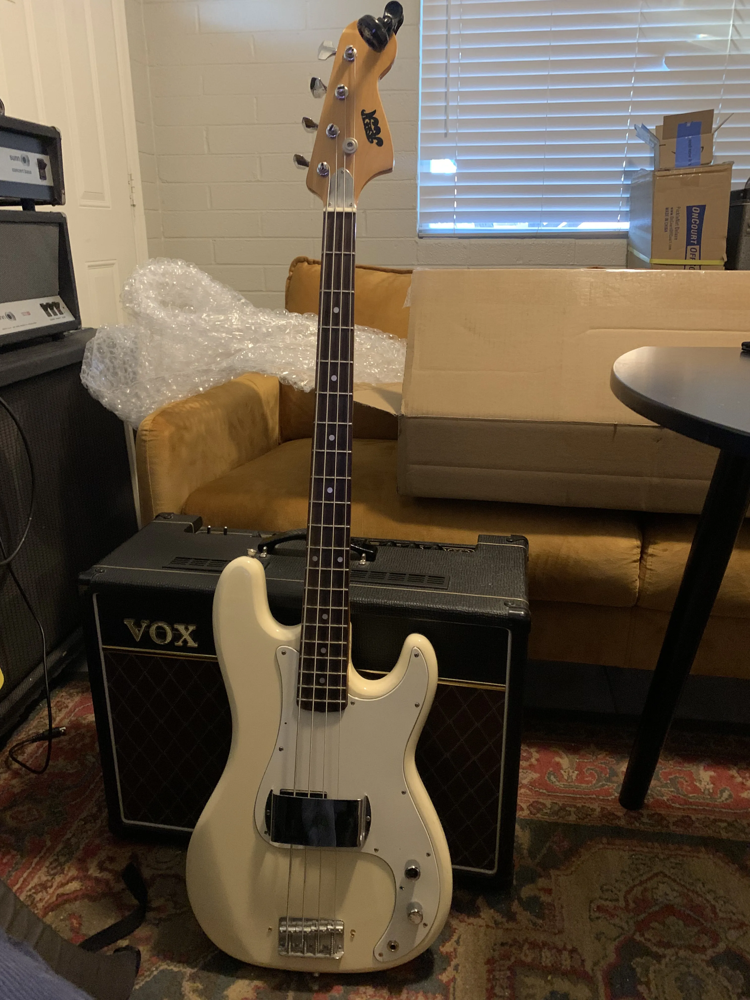
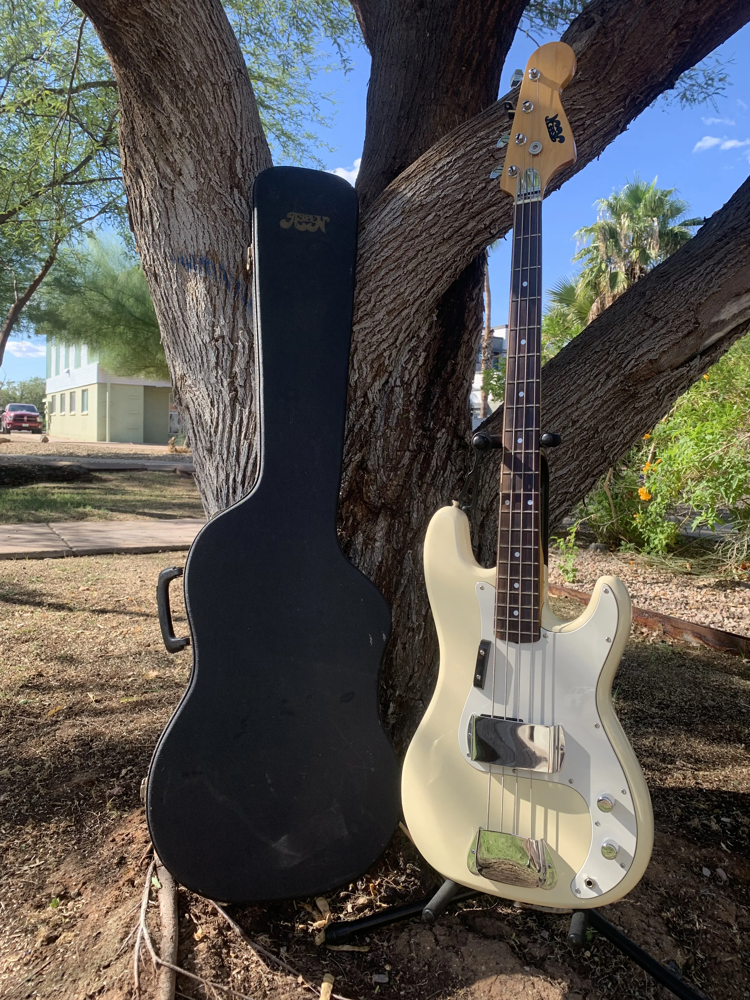

A full restoration and upgrade of a vintage 1980s Japanese P-Bass from Aspen. The project combined hands-on repair, electronic calibration, and visual refinishing with careful logging of each step.
Throughout the restoration I logged part replacements, setup tweaks, and tone results after each change. I documented each phase from disassembly, cleaning, rewiring, testing, and final setup. These notes helped tune the playability and tone to a pro level.
Restoring this bass made me appreciate the precision and nuance of hardware restoration — something I carry into my engineering work.